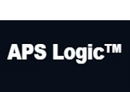

Partner Tecnologici & Integrazioni Native
Piattaforme gestionali ed ecosistemi applicativi integrati con i moduli della Suite UNICO per automatizzare la compliance nei flussi di lavoro quotidiani.
Mediafacile
Integrazione nativa con il modulo UnicoOAM per l'importazione automatica delle pratiche, la quadratura dei dati, la gestione dei reclami e la notarizzazione dei documenti di trasparenza.
Sidial Cloud
Integrazione nativa con UnicoCALL per la verifica dei consensi in tempo reale, il filtraggio preventivo delle liste sul Registro Pubblico delle Opposizioni (RPO) e la tutela dei call center.
Cooabit
Integrazione nativa per la verifica della modulistica ricevuta ed instradamento reclami.
TechVisory
Consulting AI difformità e remedation plan
Network Consulenti & Legal Tech Specialist
I professionisti del territorio che affiancano le imprese nella configurazione della Suite UNICO, nell'esecuzione degli Audit e nel governo della complessità normativa.
Mario Gargiulo
Banking & Finance Compliance ExpertSpecialista nei processi complessi del settore bancario e creditizio. Supporta gli intermediari nell'ottimizzazione dei flussi operativi e nell'adeguamento alle direttive OAM e Banca d'Italia.
Profilo LinkedInPier Giuseppe Meo
Senior Legal Tech Specialist & Privacy StrategistEsperto in strategie di protezione dati aziendali, valutazioni d'impatto DPIA e conformità alla Direttiva NIS2. Guida le strutture complesse nell'adozione di modelli di Data Governance sostenibili.
Profilo LinkedIn
Elia Lombardo
Complex Systems & Security StrategistSpecialista nella sicurezza e stabilità dei sistemi complessi, intelligence predittiva e strategie per la gestione e la protezione del territorio e dei dati sociali ad alto impatto.
Profilo LinkedInPerché diventare Consulente o Partner della Suite UNICO?
Uniamo software avanzato, intelligenza artificiale e supporto di back-office per far crescere la tua attività di consulenza.
Back-Office in Service (Zero Data Entry)
Riduci fino al 70% il tempo di censimento iniziale: i nostri operatori si occupano della bonifica e dell'ingestione dati per conto tuo e dei tuoi clienti.
Console Multi-Tenant (UnicoConsultant)
Governa l'intero portafoglio clienti da una dashboard unica e centralizzata, controllando lo stato di conformità GDPR, NIS2 e OAM in tempo reale.
White Label & Co-Branding
Personalizza i report legali, le analisi dei rischi e le notifiche con il brand e il logo del tuo Studio o della tua società di consulenza.
Vuoi accedere al programma Partner & Consulenti Accreditati?
Contattaci per scoprire il piano di convenzione riservato agli Studi Legali, DPO, CISO e Consulenti di Direzione.
Richiedi la Presentazione Reserved →